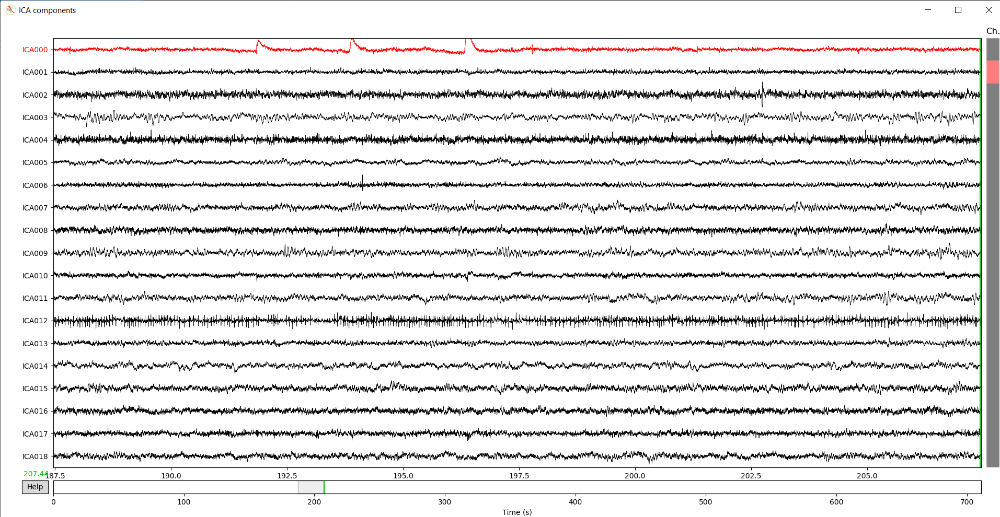
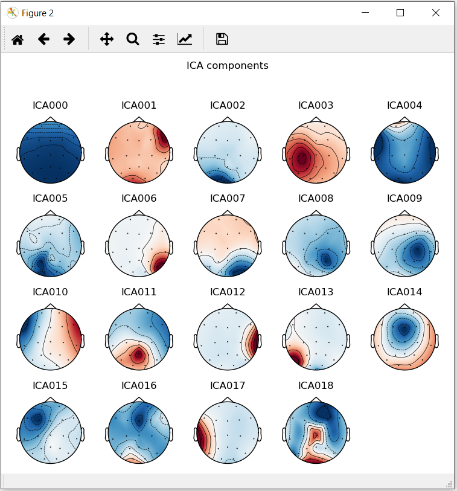

PlotICA¶
Plot the Independent Component Analysis.
Inputs
and
ICA: Object of Independent Component Analysis
Use

Sources - If this check box is checked, the Sources plot will be displayed after pressing Show plot.
Components - If this check box is checked, the Components plot will be displayed after pressing Show plot.
Show plot button - Button for showing plots.
Example¶



More information about plot sources, plot components and ICA. Information about all process here.